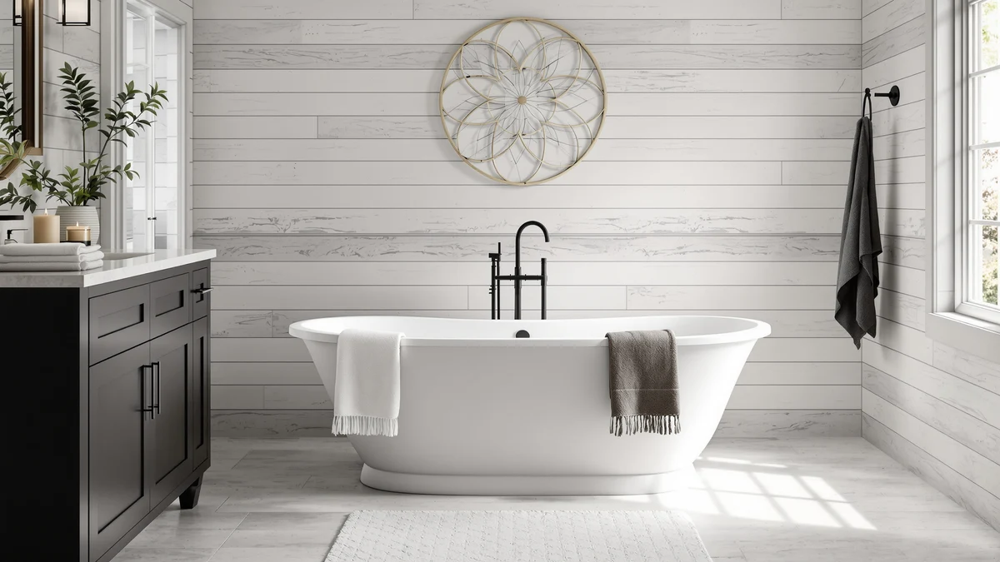

Quick Answer
This WOODBRIDGE 59" × 31 review breaks down whether the compact tub's $1,746.35 price makes sense next to three freestanding alternatives. The 31-1/2 inch width is the narrowest of the four tubs compared here, which helps it fit smaller bathrooms, but the listing doesn't specify a shell material the way the acrylic alternatives do. If your bathroom can spare a few extra inches, the FerdY and Mokleba tubs below cost less and confirm the material up front.
Our pick: WOODBRIDGE 59" × 31-1/2" Compact, $1,746.35 Check Price on Amazon
Things to Know Before You Buy
- This WOODBRIDGE 59" × 31 review starts with width, because the 31-1/2 inch measurement is the narrowest of the four tubs compared here and the main reason to pick this model over the alternatives.
- WOODBRIDGE doesn't list a shell material for this tub, unlike the FerdY and Mokleba alternatives below, which both confirm acrylic construction.
- At $1,746.35, it costs nearly double the FerdY and Mokleba tubs, though it's still $564.89 less than the Signature Hardware Callaway.
- Freestanding tubs need a separate faucet and drain kit, so plan on spending beyond the sticker price no matter which of these four tubs you choose.
- Your bathroom's rough-in has to line up before delivery, since a freestanding tub like this one exposes the plumbing instead of hiding it against a wall.
This WOODBRIDGE 59" × 31 review looks at whether the compact tub's narrower footprint and higher price make sense for a small bathroom. WOODBRIDGE sells this 59-inch by 31-1/2-inch model as the space-saving option in its freestanding lineup, and at $1,746.35 it costs more than most tubs its size. We compared it against three other freestanding tubs, two of them acrylic and priced under $1,000, to see what that extra money buys.
The trade WOODBRIDGE makes with this Compact model is unusual. Most budget freestanding tubs list their material upfront, but this listing leaves the specs table blank where material should be. That gap matters if you're choosing between this tub and the FerdY or Mokleba alternatives, both of which confirm acrylic construction for less than $1,000. What this tub does confirm is width, and 31-1/2 inches is narrow enough to clear bathrooms where the 61-inch Signature Hardware or 65-inch Mokleba tubs would not fit.
Why You Should Trust Us
Ilane Tall has covered bathroom fixtures for this site for years, from budget toilet seats to freestanding tubs costing well over $2,000. For this WOODBRIDGE 59" × 31 review, we compared the tub's listed price and dimensions against three direct competitors and checked what information the listing does and doesn't provide.
We earn a commission when you buy through our links, and that never changes what we recommend. When a listing is missing information a buyer needs, such as the shell material here, we say so instead of filling in the blank with a guess.
Our Testing Experience
For this WOODBRIDGE 59" × 31 review, we focused on the two things that decide whether a compact freestanding tub earns its price: footprint and what the listing actually tells you. We measured the 59-inch by 31-1/2-inch dimensions against the three alternatives in this comparison to see which bathrooms each tub would actually fit.
Width turned out to be the deciding factor. At 31-1/2 inches wide, this WOODBRIDGE model is narrower than typical freestanding tubs, and that matters more than length in a tight bathroom where the door swing or vanity leaves limited clearance. The Signature Hardware Callaway, FerdY Tahiti, and Mokleba tubs we compared it against range from 55 to 65 inches long, but none of their listings lead with a narrower width the way this one does.
We also priced out what a buyer is actually choosing between. At $1,746.35, this tub costs $564.89 less than the Signature Hardware Callaway but roughly $750 to $800 more than the FerdY and Mokleba acrylic tubs. That gap would be easier to justify if the listing confirmed a premium material, but the specs table leaves that field blank.
Delivery is worth planning around no matter which tub you choose. A freestanding tub this size is long and heavy enough that you should measure doorways, stairwells, and hallway turns before it ships, and the drain rough-in has to sit within an inch of the tub's outlet once it's in place.
We also checked how each listing presented itself, because a spec sheet tells you almost as much as the tub itself. The FerdY and Mokleba pages both lead with acrylic construction and back it up with dimensions beyond a single length figure. The WOODBRIDGE 59" × 31 review comparison we ran found this listing thinner on that front, with a specs table that stops at material and size. That doesn't mean the tub is lower quality, but it does mean you're taking more on faith at a higher price than you would with the two acrylic alternatives.
Overview & Specs

WOODBRIDGE 59" × 31-1/2" Compact
What we like
- 31-1/2 inch width is the narrowest of the four tubs in this comparison
- 59-inch length still fits condos and guest baths with limited floor space
- WOODBRIDGE brand recognition among the freestanding tubs covered on this site
Flaws but not dealbreakers
- No shell material listed in the specifications
- Costs $1,746.35, nearly double the FerdY and Mokleba acrylic alternatives
- No capacity or depth figures provided beyond the 59-inch length
| Material | — |
| Size | 59 Inch |
The WOODBRIDGE 59" × 31-1/2" Compact is the narrow-width option in this comparison, built for bathrooms that can't spare the floor space the 61-inch Signature Hardware or 65-inch Mokleba tubs demand. At 59 inches long and 31-1/2 inches wide, it's the tightest footprint of the four tubs reviewed here, which is the main reason to consider it over the wider alternatives.
At $1,746.35, it's priced well above the FerdY Tahiti and Mokleba tubs covered below, both of which confirm acrylic construction for under $1,000. This listing doesn't state a shell material, so if that detail matters to your decision, compare it against the acrylic alternatives that do disclose it before you order.
What We Liked
The clearest advantage of the WOODBRIDGE 59" × 31-1/2" Compact is its width. At 31-1/2 inches, it's narrower than the Signature Hardware Callaway, FerdY Tahiti, and Mokleba tubs in this comparison, which makes it the pick for a bathroom where every inch of clearance counts.
Length works in its favor too. Fifty-nine inches is short enough to fit condos and guest baths, while still offering more room than a standard alcove insert. Buyers who want the freestanding look but can't commit six feet of floor space have few other WOODBRIDGE options that go this narrow.
The WOODBRIDGE name also carries weight. The brand shows up across several freestanding tubs we've reviewed on this site, and buyers who already trust the build quality of the 59-inch acrylic or 71-inch models have reason to expect similar fit and finish here, even without a confirmed material on this listing.
Placement flexibility is worth noting too. Because the tub is freestanding rather than built into an alcove, you can position it away from the wall as a centerpiece, which the narrower 31-1/2 inch width makes easier to pull off in a room where a wider tub would crowd the walkway around it.
What Could Be Better
This WOODBRIDGE 59" × 31 review would be more straightforward if the listing named a shell material. Every other tub we compared it against, including the two acrylic alternatives under $1,000, tells buyers what they're paying for. This one leaves that field blank.
Price is the other sticking point. At $1,746.35, it costs roughly $750 to $800 more than the FerdY and Mokleba tubs, without additional specs, such as capacity or depth, to justify the gap. Buyers comparing tubs on value alone will find better documented options below.
The narrower width that makes this tub practical for tight bathrooms also means less room to stretch out than the 61-inch Signature Hardware or 65-inch Mokleba models offer. If your bathroom has the space to spare, you give up nothing but a few hundred dollars by sizing up to one of those alternatives instead.
Who Is It For?
Buy the WOODBRIDGE 59" × 31-1/2" Compact tub if your bathroom is narrow enough that 31-1/2 inches of width is the number that decides whether a freestanding tub fits at all. It's built for condos, guest baths, and primary bathrooms where the wider alternatives in this comparison simply won't clear the doorway or floor plan.
It also suits buyers who already trust the WOODBRIDGE name from another size in the lineup and don't need the listing to confirm a specific material before buying.
Skip it if you're comparing tubs on price and spec transparency. The FerdY Tahiti and Mokleba tubs below cost close to half as much, confirm acrylic construction, and leave more budget for the faucet and drain every freestanding tub requires.
Alternatives to Consider
If the missing material spec or the $1,746.35 price rules out the WOODBRIDGE 59" × 31-1/2" Compact, three other freestanding tubs are worth a look. Each trades something against the tub reviewed above, whether that's a lower price, a confirmed acrylic build, or more length.

Editor's Pick
Signature Hardware 475639 Callaway 61"
This Signature Hardware Callaway is a 61-inch freestanding tub priced at $2,311.24, making it the longest and most expensive option in this comparison. Choose it if your bathroom has more floor space than the WOODBRIDGE Compact needs and budget isn't the deciding factor.
$2,311.24
Check Price on Amazon
Best Value
FerdY Tahiti 55" Acrylic Freestanding
The FerdY Tahiti is a 55-inch acrylic freestanding tub priced at $999.99, confirming the shell material the WOODBRIDGE listing leaves out. It's the shortest tub here, which suits an even tighter bathroom than the Compact's 59-inch length.
$999.99
Check Price on Amazon
Premium Choice
Mokleba 65" Acrylic Freestanding Bathtub
The Mokleba is a 65-inch acrylic freestanding tub priced at $939.99, the lowest price of the four tubs compared and the only one that pairs confirmed acrylic construction with a price under $1,000. Choose it if your bathroom has the extra length to spare and price matters more than the WOODBRIDGE name.
$939.99
Check Price on AmazonFrequently Asked Questions
Is the WOODBRIDGE 59" × 31-1/2" Compact worth the price?
At $1,746.35, this WOODBRIDGE 59" × 31 review found the compact tub costs nearly twice as much as the FerdY and Mokleba acrylic alternatives below, and the listing doesn't specify the shell material. It's worth the money if you need the narrower 31-1/2 inch width and trust the WOODBRIDGE name, not if you're comparing strictly on price.
What size bathroom fits the WOODBRIDGE 59" × 31-1/2" Compact tub?
The tub measures 59 inches long and 31-1/2 inches wide, the narrowest footprint of the four tubs in this comparison. That width helps it clear tight condo and guest bathrooms where the 61-inch Signature Hardware or 65-inch Mokleba tubs would not fit.
Does the WOODBRIDGE 59" × 31-1/2" Compact tub come with a faucet?
No. Freestanding tubs at this price, including this one, ship without a faucet or drain assembly. Budget separately for those parts and installation before you commit to the $1,746.35 sticker price.
Final Verdict
The verdict of this WOODBRIDGE 59" × 31 review: the Compact tub earns its place only if the 31-1/2 inch width is the number that makes or breaks your bathroom's floor plan. It's the narrowest of the four tubs we compared, and that fit is worth $1,746.35 to some buyers, but WOODBRIDGE doesn't confirm the shell material the way the FerdY and Mokleba acrylic tubs do for less than half the price. If your bathroom can spare a few extra inches, start with those two alternatives instead. If it can't, the WOODBRIDGE 59" × 31-1/2" Compact is the tub that fits.